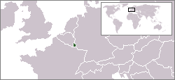

Marele Ducat de Luxemburg (Groussherzogtum Lëtzebuerg în luxemburgheză) este un stat în Europa care face parte din grupul de țări Benelux (alături de Belgia și Țările-de-Jos) și din Uniunea Europeană.

Istoria înregistrată a Marelui Ducat al Luxemburgului începe odată cu construcția Castelului Luxemburg în anul 963. În jurul acestei fortărețe s-a dezvoltat treptat un oraș care a devenit centrul unui stat mic dar important. Comitatul Luxemburg este ridicat la rang de Ducat în 1354. În 1437 a avut loc o criză, familia conducătoare neavând moștenitori legitimi pentru tron. În secolele următoare, fortăreața Luxemburg a fost în mod constant mărită și întărită de cei care au ocupat-o, între alții, Bourbonii, Habsburgii, Hohenzollernii și francezii. Chiar și după înfrângerea lui Napoleon în 1815, când Congresul de la Viena a conferit autonomie formală Luxemburgului, țara a devenit obiectul unei dispute între Prusia și Olanda.